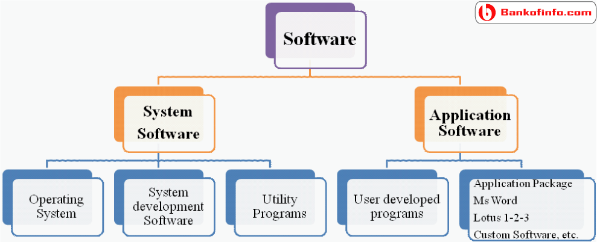

simply software, is a generic term that refers to a collection of data or computer instructions that tell the computer how to work, in contrast to the physical hardware from which the system is built, that actually performs the work. In computer science and software engineering, computer software is all information processed by computer systems, programs and data. Computer software includes computer programs, libraries and related non-executable data, such as online documentation or digital media. Computer hardware and software require each other and neither can be realistically used on its own.
Advantage of Digital Technology
Disadvantage of Technology
Types of software
The first theory about software—prior to creation of computers as we know them today—was proposed by Alan Turing in his 1935 essay On Computable Numbers, with an Application to the Entscheidungsproblem (decision problem).
This eventually led to the creation of the academic fields of computer science and software engineering. Both fields study software and its creation. Computer science is the theoretical study of computer and software (Turing's essay is an example of computer science), where as software engineering is the application of engineering and development of software.
System software
Operation system
System Utilities
Application Software

Qulification need
As technology evolves and becomes a bigger part of everyday life, so too does the need for technology professionals. Software engineers design and guide the development of programs that computers use to make life a little easier for the rest of us. Although self-taught programming skills can land you a job, formal education is the best way to achieve a job with more design responsibilities and higher pay.
Earn a degree in software engineering or related field:-
Most software engineer positions require a bachelor's degree.[1] Majoring in software engineering will provide the most useful background for designing and perfecting software in the corporate world
Begin programming immediately
Software engineering is not focused exclusively on coding, but you will need to know at least a couple languages, and a deeper understanding of how they function. There is no widespread agreement on which languages are most useful, but these are all popular choices:
C++,java,python,html,php,javascript,angular,css,oracle etc.
Software testing is an investigation conducted to provide stakeholders with information about the quality of the software product or service under test.[1] Software testing can also provide an objective, independent view of the software to allow the business to appreciate and understand the risks of software implementation. Test techniques include the process of executing a program or application with the intent of finding software bugs (errors or other defects), and verifying that the software product is fit for use.
Software testing involves the execution of a software component or system component to evaluate one or more properties of interest.
Software design is the process by which an agent creates a specification of a software artifact, intended to accomplish goals, using a set of primitive components and subject to constraints.[1] Software design may refer to either "all the activity involved in conceptualizing, framing, implementing, commissioning, and ultimately modifying complex systems" or "the activity following requirements specification and before programming, as ... [in] a stylized software engineering process.